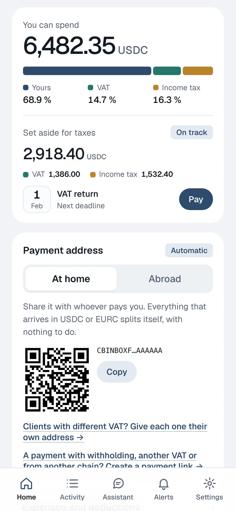

Freelancers and contractors
Paid in USDC by clients at home or abroad. Kyros knows which payments carry VAT, which carry withholding and when each tax is due.
Kyros splits every stablecoin payment on Stellar as it arrives. What is yours goes to your wallet. The tax waits in a vault only you control, until the day it is due.
Free beta on the Stellar test network. Test money only.
Pick a country and a situation. These are the same rates Kyros uses, from its open rule packs.
An estimate from public rules, not tax advice. In the app, Kyros adjusts the reserve to your income and expenses.
Clients pay you in USDC or EURC from any wallet or exchange. They do not need to install or learn anything.
Your share reaches your wallet in the same moment. VAT and income tax go to a vault that belongs to you, sorted by period.
Every tax unlocks on its legal date, moved past weekends and holidays. Schedule the payment once and it goes out by itself.

Paid in USDC by clients at home or abroad. Kyros knows which payments carry VAT, which carry withholding and when each tax is due.
Plugins for WooCommerce and Shopify, and pay-per-use APIs over x402: every sale sets its tax aside as it is paid.
Pay a whole run of contractors in one signature. Each of them is split by the rules of their own vault.
Kyros is software, not a bank. The rules that protect your reserve live in smart contracts on Stellar, where anyone can read them.
Kyros never holds your funds or your keys. The vault is a contract that only your wallet controls.
A new destination or a change of rules waits a notice period you can cancel. A stolen key cannot empty your reserve at once.
There is no switch to freeze or move your money. Not for us, not for anyone.
Every change runs the test suite; fuzzing runs every night and mutation testing checks that the tests catch real bugs. Developers are invited to try to break it.
Anyone can check that the contracts on the network are built from the published source code.
Each country has its own rule pack: rates, deadlines, holidays and instalments, with the official source behind every figure.
No rule pack for that country yet.
No. Kyros applies public tax rules to set money aside and reminds you of each date. The figures are estimates. For decisions about your own situation, talk to a qualified adviser.
You do. Your share goes straight to your wallet and the tax part sits in a vault that only your wallet controls. Kyros never has access to your funds or keys.
USDC and EURC on Stellar. Clients can pay from any Stellar wallet or exchange that sends them.
Kyros is a free beta on the Stellar test network, with test money. A beta on the main network is being prepared, and this page will say so when it opens.
You keep the same payment address. From the day you move, new payments follow the rules of your new country, and the old vault still pays the old country's taxes on their dates.
Your vault keeps working. It is a contract on Stellar with no admin keys: each tax still unlocks on its date, and the code is open source so anyone can run the tools around it.
Nothing during the testnet beta. Network fees on Stellar are a fraction of a cent.